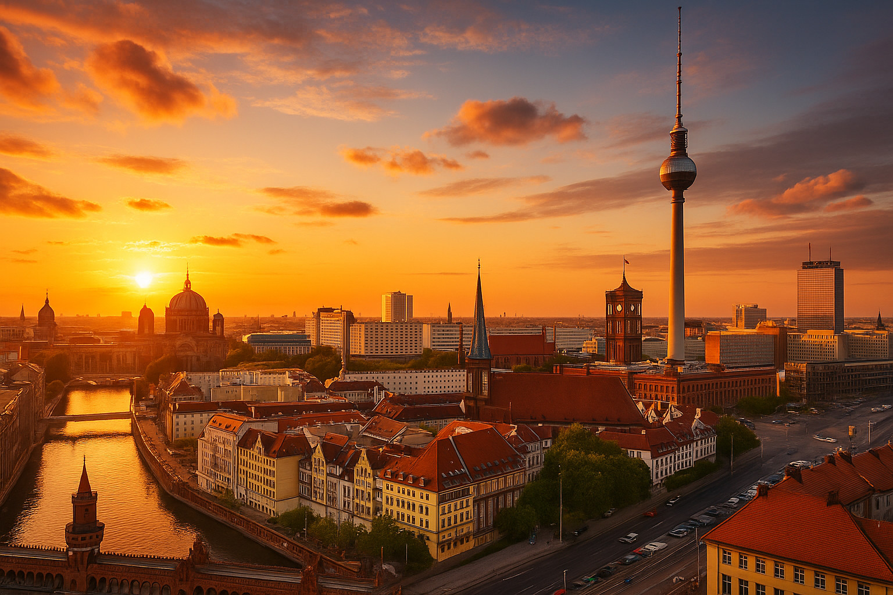

.png)

Almaniyada KİRAYƏ ev tapmaq problemi
Bildiyiniz kimi Almaniya bir sosial dövlətdir.Burda aşağı gəlirli ailələr, tələbələr üçün bir çox yardımlar var. Amma təbii ki bunlar üçün bütün sənədləriniz qaydasında olmalıdır. Buda yeni gəldikdə bir neçə aya həll olan bir məsələdir. Təbiiki əyalətlərə görə fərqli ola bilər.Sadəcə Almaniyaya yeni gələnlər üçün də bir çox çətinliklər mövcuddur.Bunlardan ən birincisi kirayə mənzil problemidir. Almaniyada kirayə mənzil tapmaq gəlmələr üçün çətindir. Bunun bir neçə səbəbləri var :
1. Təhsil yolu ilə gəldikdə - Sənədləriniz qaydasında olana kimi şirkətlərdən mənzil kirayələmək demek olar mümkün deyil. Həmçinin gəlirlərinizdə aşağı olduğu üçün nə şirkətlər nədə fiziki şəxslər sizə ev vermək istəmir.Yalnız ikinci kirayəçi kimi tapa bilirsiniz. Almaniyada bu işlərin başında kürtlər və türklər durur deyərdim. Dövlətdən ucuz kirayə mənzil götürüb ikinci kirayəçiyə daha baha qiymətə verirlər. Yeni gələn tələbə üçündə yeganə çıxış yolu bu deyərdim. Mən özüm Facebook qruplarının birindən kürtlərdən tapmışdım. Amma razılaşmadım. Bir azərbaycanlı tapdım qrupların birindən. Gəldim onlarla qaldım .
2 otaqlı evdə 8 nəfər qalırdıq. Aylığı 350 dən hesabladı. Bu arada kürtlər daha insaflı təklif etmişdi. Qiymət Berlinə aiddir. Tələbələr üçün kamplar varki onlarda bahadı və imkanı olanlar ordan da ev kirayələyə bilir. Peşə təhsili ilə gələnlər isə bir az üstünlükləri var. Otrum aldıqdan sonra dövlətdən yardım alabilir və onlar vasitəsi ilə kaplarda qala və cuzi miqdarda kirayə ödəyə bilirlər.2. İş visası ilə gəldikdə işiniz bir az asanlaşır. Gəliriniz yaxşı olduğuna fiziki şəxlərdən ilk öncə evtapmaq asan olur . Amma yenedə bir çoxlar ən azı 3 aylıq maaş sənədi tələb edir.
Berlində Kirayə mənzil tapmaq çox çətindir. Şirkətlərdə seçimi qanunlarla tənzimləyilər. Demək olar hamısında təsadüfü seçimlə olur.(Random seçim). BU seçimədə düşmək üçün müəyyən kriteriyalara cavab verməlisənki seçim olacaq siyahiya düşə biləsən . Şirkətlərə görə ortalama seçim prosesi bir neçə mərhələli olur. Bele çox təlabatı görən , izləyən bir neçə növ fırıldaqçılarda iş başındadır.Ona görə kirayə mənzil götürərkən mütləq əsas kirayəçi müqavilələrini tələb edin. Çünki bəzən ikici kirayəçi sizə 3 cu kirayəçi kimi müqavilə bağlayıb depozitidə götürüb aradan çıxa bilər və polislə bele heçnə edə bilməyəcəksiz. Ən məşhuru isə kürtlərin, türklərin makler sistemidi. İki formada olur . Əvvəldə yazdığım kimi ucuz götürüb baha kirayə vermək. Birdəki bunları “Hava parası” tələbidir. Ucuz götürürlər evi ucuzda verirlər. Amma Səndən “Hava parası” alırlar .Buda 3-4 min eurodan 15 min euroya qədər dəyişir. Birdəfəlik ödənişdir və geri ödənilmir.